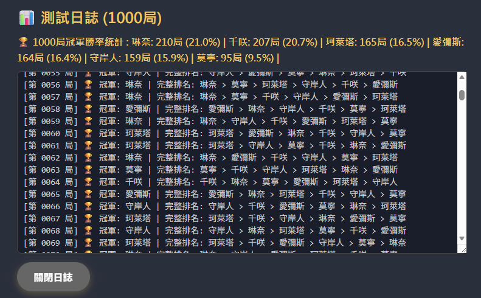
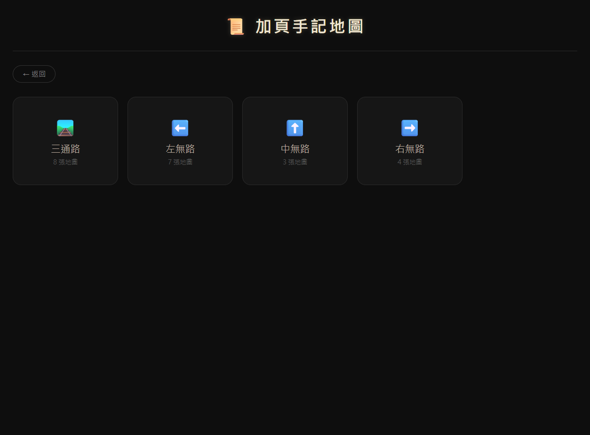

About me
我喜歡把網站做得有主題、有角色感，也有一點像在逛遊戲頁面。
我做網站時最在意的不是它像不像制式模板，而是它有沒有自己的氣氛。只要題材有趣，我會很想把它做成能切換、能點圖、能探索的主題站。

Working style
讓網站像一個世界觀，而不只是幾個版塊拼在一起。My story
我的創作方式
先抓到題材氣氛，再決定版面怎麼長，而不是先套版再補內容。
我比較像是在做「主題作品頁」而不是傳統官網
我喜歡的題材通常跟遊戲、角色、收藏和整理資料有關，所以我做出來的網站也常常會偏向粉絲向、互動型，或是讓人願意慢慢逛的風格。
先決定題材
我會先想這個網站的主題是什麼，要給誰看，氣氛要偏收藏、資料站，還是模擬工具。
再安排互動
像是切層、燈箱、卡片切換、按鈕流程，這些都比單純排文字更吸引我。
最後整理畫面節奏
把資訊分配成容易逛、容易點、也容易找到重點的順序，讓作品更完整。
Core skills
我目前最擅長的內容
擅長的主題
第五人格、鳴潮、遊戲收藏、角色資料整理，以及帶有二次元或主題感的頁面。
我重視的細節
畫面氣氛、點擊流程、圖片瀏覽體驗，以及使用者能不能很自然地逛下去。
Portfolio note
我想把這個網站做成什麼
這個網站之後會更像我的個人作品展，不只是簡單自介，而是把我喜歡的專案一路整理進來。

主題感
我希望每個作品看起來都像有自己的小世界，而不是只是不同內容套同一版。

互動性
我希望訪客不只是看資訊，而是真的會點開、切換、預覽，去探索整個頁面。

持續收錄作品
之後我還可以把更多遊戲主題網站、整理頁或模擬工具慢慢補進來，變成完整作品庫。

持續收錄作品
之後我還可以把更多遊戲主題網站、整理頁或模擬工具慢慢補進來，變成完整作品庫。